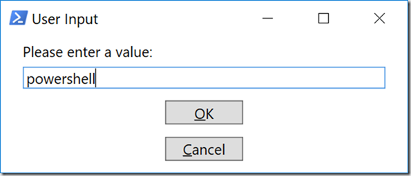

Назад
TextBox.MaxLength Свойство
Определение
Пространство имен:
System.Windows.Controls
Сборка:
PresentationFramework.dll
Получает или задает максимальное число символов, которые могут быть вручную введены в текстовом поле.
[System.Windows.Localizability(System.Windows.LocalizationCategory.None, Modifiability=System.Windows.Modifiability.Unmodifiable)]
public int MaxLength { get; set; }
Значение свойства
Int32
Максимальное число символов, которые могут быть вручную введены в текстовом поле. Значение по умолчанию — 0, что означает неограниченное количество.
Атрибуты
LocalizabilityAttribute
Примеры
В следующем примере показано, как создать объект TextBox с MaxLength 500 символами.
XAML
StackPanel myStackPanel = new StackPanel();
//Create TextBox
TextBox myTextBox = new TextBox();
myTextBox.Width = 200;
// Put some initial text in the TextBox.
myTextBox.Text = "Initial text in TextBox";
// Set the maximum characters a user can manually type
// into the TextBox.
myTextBox.MaxLength = 500;
myTextBox.MinLines = 1;
// Set the maximum number of lines the TextBox will expand to
// accomidate text. Note: This does not constrain the amount of
// text that can be typed. To do that, use the MaxLength property.
myTextBox.MaxLines = 5;
// The text typed into the box is aligned in the center.
myTextBox.TextAlignment = TextAlignment.Center;
// When the text reaches the edge of the box, go to the next line.
myTextBox.TextWrapping = TextWrapping.Wrap;
myStackPanel.Children.Add(myTextBox);
this.Content = myStackPanel;
Это свойство можно использовать для ограничения длины текста, введенного в элементе управления, для таких значений, как почтовые индексы и номера телефонов. Это свойство также можно использовать для ограничения длины текста, введенного при хранении данных в базе данных, чтобы текст, введенный в элемент управления, не превышал максимальную длину соответствующего поля в базе данных.
Это свойство не влияет на символы, добавляемые программным способом.
Если для этого свойства задано значение 0, максимальная длина текста, которую можно ввести в элементе управления, ограничена только доступной памятью.

private void TextBox_PreviewTextInput(object sender, TextCompositionEventArgs e)
{
TextBox textBox = sender as TextBox;
// Определяем максимальное количество символов, которые можно ввести
int maxLength = 10;
// Проверяем, что количество символов не превышает допустимое значение
if (textBox.Text.Length >= maxLength)
{
e.Handled = true;
}
}
private void textBox1_KeyPress(object sender, KeyPressEventArgs e)
{
if (!char.IsControl(e.KeyChar) && !char.IsDigit(e.KeyChar))
{
e.Handled = true;
}
}